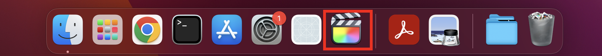
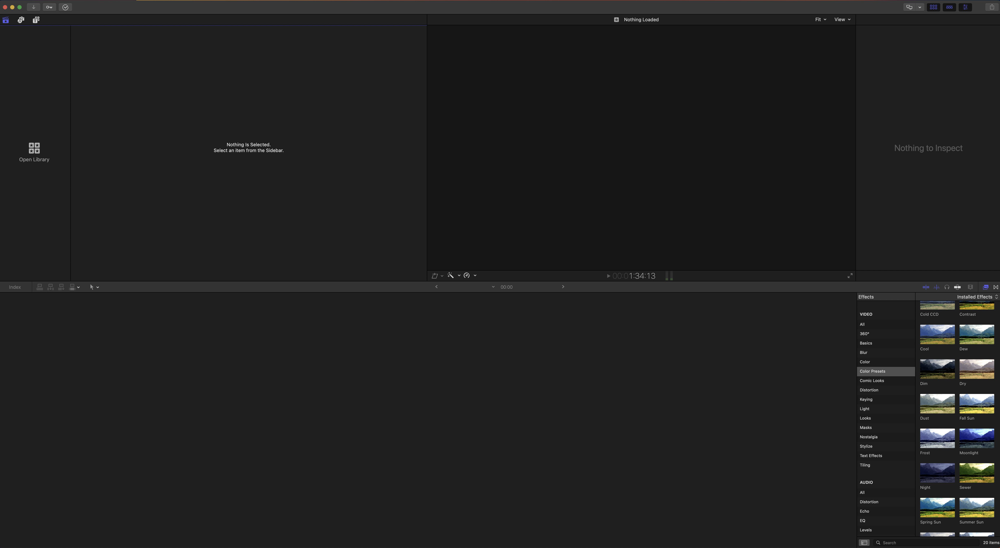
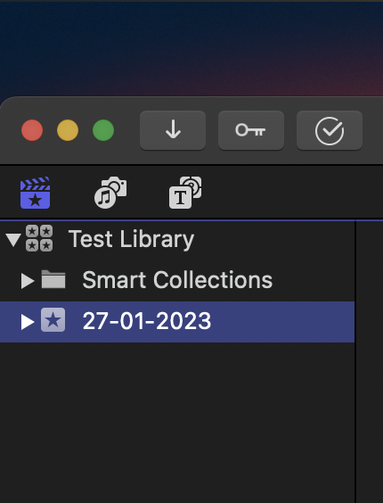
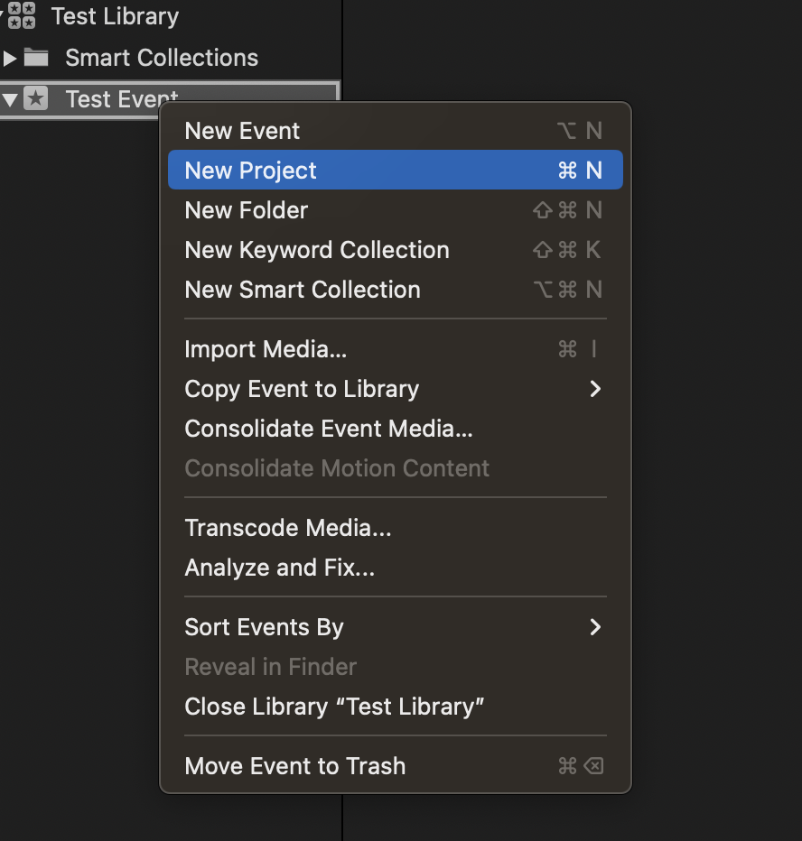

3.2 Setting up Final Cut
- Open Final Cut. You can find Final Cut in the dock as shown below.

Figure 3.1: Final Cut icon
- When you first open Final Cut, you should see an empty display like the one below. If a library is already open, go to File > Close Library.

Figure 3.2: Final Cut initial display
Create a new library using File > New > Library. Name your library something meaningful such as “Course x”, “Week 1 – Course y”. Your library will consist of multiple events.
Once your library has been created, an event will be automatically created with the current date, which you can see in the top left panel. You can rename this event by double clicking on the name or create a new event by right clicking on this area and selecting New Event.

Figure 3.3: New event created with library
- To begin editing your video, you will need to create a new project within your event. You can do this by right clicking on your event and selecting New Project. Name your project and select OK.

Figure 3.4: New event created with library
- Once your project is open, you can either import both your screen recording and camera capture using the Import > Media option in Files or drag and drop both files into the recording pane in the bottom half of final cut.